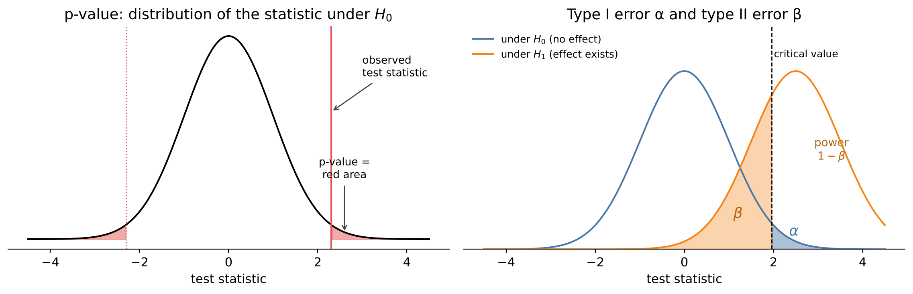
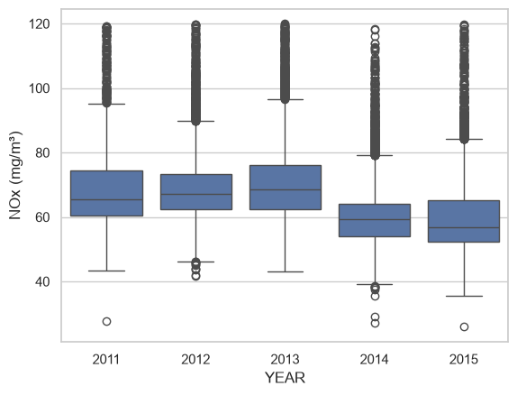
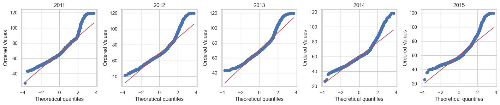

# Setup: works locally and in Google Colab
import importlib.util, subprocess, sys
for pkg in ["ucimlrepo"]: # package that is not pre-installed everywhere
if importlib.util.find_spec(pkg) is None: # not installed yet?
subprocess.run([sys.executable, "-m", "pip", "install", "-q", pkg], check=True) # install it
import numpy as np
import pandas as pd
import matplotlib.pyplot as plt
import seaborn as sns
from scipy import stats
sns.set_theme(style="whitegrid")4 Statistical Testing
A process engineer changes the supplier of a raw material, and the mean scrap rate in the following week is slightly lower. Is the new material better – or was it a good week by chance? Questions like this are everyday engineering questions, and statistical hypothesis tests are the standard tool to answer them. They provide a disciplined way to decide whether an observed difference is larger than what random variation alone would plausibly produce.
Tests are also among the most misunderstood tools of statistics. A small p-value does not mean that an effect is large or important, and a large p-value does not prove that there is no effect. With the big datasets of modern production, almost every difference becomes “significant”. This chapter therefore puts as much weight on effect sizes and practical relevance as on p-values.
Scenario: the consultant’s bonus
A gas turbine power plant hired a consultant in 2011 to reduce its NOx emissions through better operating practices. The contract promises a bonus if the emissions in 2015 are “demonstrably and relevantly lower” than in 2011; the contract defines relevant as a reduction of at least 5 % of the 2011 mean. The consultant presents the hourly NOx measurements of both years: the mean fell from 67.6 mg/m³ in 2011 to 59.9 mg/m³ in 2015, and a t-test on about 7,400 hourly values per year gives p < 0.001. He asks for payment. You are asked to review the claim for the plant management.
Your decision: Confirm the claim and approve the bonus – or not? Which argument would you put in your report?
Before reading on: write down your own decision and how confident you are. You will compare it with the result at the end of the chapter.
Learning goals. After this chapter you can
- formulate engineering questions as statistical hypotheses,
- explain test statistic, p-value, significance level, type I and type II errors and power,
- choose and apply t-tests, ANOVA, chi-squared and non-parametric tests,
- distinguish statistical significance from practical relevance (effect size),
- recognise and correct for the multiple-testing problem,
- estimate the sample size needed to detect a relevant effect.
Course goal. This chapter contributes to step 3 of the course goals: quantify effects and uncertainty.
Datasets in this chapter
4.1 The logic of a hypothesis test
A hypothesis test is a proof by contradiction with uncertainty. We assume that there is no effect and check whether the data are compatible with this assumption.
Definition: Elements of a hypothesis test
- Null hypothesis \(H_0\): the “nothing special” statement, e.g. \(\mu_1 = \mu_2\) (both suppliers give the same mean).
- Alternative hypothesis \(H_1\): what we want to detect, e.g. \(\mu_1 \neq \mu_2\).
- Test statistic \(T\): a number computed from the data that measures the deviation from \(H_0\).
- p-value: the probability of obtaining a test statistic at least as extreme as the observed one, assuming \(H_0\) is true.
- Significance level \(\alpha\) (often 0.05): \(H_0\) is rejected if \(p < \alpha\).
Two kinds of wrong decisions are possible:
| \(H_0\) true (no effect) | \(H_0\) false (effect exists) | |
|---|---|---|
| \(H_0\) rejected | type I error (false alarm), probability \(\alpha\) | correct decision, probability \(1 - \beta\) = power |
| \(H_0\) not rejected | correct decision | type II error (missed effect), probability \(\beta\) |

The significance level controls the false alarm rate. The power depends on the size of the effect, the noise level and the sample size – small samples often have too little power to detect relevant effects.
Pitfall: what the p-value is not
- It is not the probability that \(H_0\) is true.
- \(p \ge 0.05\) does not prove that there is no effect – maybe the sample was just too small (“absence of evidence is not evidence of absence”).
- \(p < 0.05\) says nothing about the size or the importance of the effect.
4.2 Comparing two groups: the t-test
For two independent samples with means \(\bar x_1, \bar x_2\), standard deviations \(s_1, s_2\) and sizes \(n_1, n_2\), the Welch t-test uses
\[t = \frac{\bar x_1 - \bar x_2}{\sqrt{s_1^2/n_1 + s_2^2/n_2}}.\]
Under \(H_0\), \(t\) follows approximately a t-distribution (introduced with the confidence interval for the mean in Chapter 3) with
\[\nu = \frac{\left(s_1^2/n_1 + s_2^2/n_2\right)^2}{\dfrac{(s_1^2/n_1)^2}{n_1 - 1} + \dfrac{(s_2^2/n_2)^2}{n_2 - 1}}\]
degrees of freedom. \(\nu\) is usually not an integer; it lies between the smaller of \(n_1 - 1\) and \(n_2 - 1\) and \(n_1 + n_2 - 2\). SciPy computes it automatically. For large samples, the t-distribution is practically the standard normal distribution (table in Chapter 3), so \(\nu\) hardly matters. Welch’s version does not assume equal variances and should be the default (the classical Student t-test assumes them).
Tests and confidence intervals are two sides of one coin
A two-sided test at level \(\alpha = 0.05\) rejects \(H_0: \mu_1 - \mu_2 = 0\) exactly when the 95 % confidence interval for \(\mu_1 - \mu_2\) does not contain 0. The interval is more informative: it shows not only whether there is a difference but also how large it plausibly is. Report intervals whenever possible.
4.3 More than two groups, categories and non-normal data
| Question | Test (data approx. normal) | Rank-based alternative (no normality assumption, also for ordinal data) |
|---|---|---|
| Do two independent groups differ? | Welch t-test, ttest_ind(equal_var=False) |
Mann–Whitney U, mannwhitneyu |
| Paired measurements (before/after on the same parts) | paired t-test, ttest_rel |
Wilcoxon signed-rank, wilcoxon |
| Do \(k\) groups differ? | one-way ANOVA, f_oneway |
Kruskal–Wallis, kruskal |
| Are two categorical variables related? | chi-squared test, chi2_contingency |
– |
The rank-based tests do not compare means: they check whether the values of one group tend to be larger than those of another (Mann–Whitney, Kruskal–Wallis), or whether paired differences are centred at zero (Wilcoxon). They are robust against outliers and skewed data; if the data are approximately normal, the t-test and ANOVA detect a difference slightly more often.
Pitfall: check the assumptions
All tests in the table assume independent observations – each value carries its own information. Values measured in time order (hourly values, consecutive parts of one machine) usually violate this: the p-value comes out too small and the interval too narrow.
- t-test and ANOVA: approximately normal data, or large samples (central limit theorem). The classical ANOVA also assumes equal variances;
f_oneway(..., equal_var=False)gives Welch’s version. - Rank-based tests: no distribution assumed, but the values must at least be ordered (ordinal).
- Chi-squared test: an expected count of at least 5 in every cell.
The one-way ANOVA (analysis of variance) compares the variation between group means with the variation within the groups:
\[\begin{aligned} F &= \frac{\text{variance between groups}}{\text{variance within groups}} \\ &= \frac{\sum_j n_j(\bar x_j - \bar x)^2/(k-1)}{\sum_j \sum_i (x_{ij} - \bar x_j)^2/(N-k)}. \end{aligned}\]
Here \(x_{ij}\) is observation \(i\) in group \(j\), \(\bar x_j\) the mean of group \(j\) with \(n_j\) observations, \(\bar x\) the overall mean, \(k\) the number of groups and \(N\) the total number of observations. A large \(F\) indicates that at least one group mean differs. ANOVA does not say which one – this requires pairwise comparisons, and with them many tests at once:
Pitfall: many tests, many false alarms
If we perform 20 independent tests at \(\alpha = 0.05\) and no effect exists anywhere, we still expect one “significant” result by chance; the probability of at least one false alarm is \(1 - 0.95^{20} \approx 64\,\%\). Decide before looking at the data which comparisons you will test, and correct the significance level. The simplest correction, Bonferroni, uses \(\alpha/m\) for each of \(m\) tests. It is strict and misses real effects more often than necessary; the Holm method gives the same protection with less strict thresholds. Both are available in statsmodels.stats.multitest.multipletests.
The chi-squared test compares the observed counts \(O\) in a contingency table with the counts \(E\) expected if the variables were independent: \(\chi^2 = \sum (O - E)^2/E\). The expected count of a cell is \(E = \text{row total} \cdot \text{column total} / \text{total count}\).
4.4 Effect size and practical relevance
Definition: Cohen’s d
The standardised mean difference \[d = \frac{\bar x_1 - \bar x_2}{s_p}, \qquad s_p = \sqrt{\frac{s_1^2 + s_2^2}{2}},\] expresses a difference in units of the standard deviation. Rough conventions: \(|d| \approx 0.2\) small, \(0.5\) medium, \(0.8\) large.
In engineering, the most meaningful effect size is often the raw difference in physical units, compared with a tolerance or a requirement: “the mean diameter differs by 0.2 µm, the tolerance is ±20 µm”.
Pitfall: significance with large samples
The standard error shrinks with \(1/\sqrt{n}\). With thousands of observations, differences far too small to matter become highly significant. With big data, always ask: Is the difference large enough to matter for the process?
# Download helper, as in Chapter 2
from pathlib import Path
import requests
DATA = Path("data")
DATA.mkdir(exist_ok=True) # create the folder ./data if it does not exist
def download(url, fname=None):
"""Download a file once and cache it in ./data."""
if fname is None: # no file name given:
fname = url.split("/")[-1] # use the last part of the URL
path = DATA / fname # "/" joins folder and file name
if not path.exists(): # download only if not cached yet
r = requests.get(url, timeout=120) # give up after 120 s without response
r.raise_for_status() # stop with an error if the download failed
path.write_bytes(r.content) # open, write and close the file in one step
return path4.5 Live coding: NOx emissions 2011–2015
The dataset contains 36,733 hourly sensor values of a gas turbine in north-western Turkey, recorded over five years, with one CSV file per year. Besides ambient conditions and turbine process variables, it contains the emissions of carbon monoxide (CO) and nitrogen oxides (NOX), both in mg/m³. Emission limits make NOx a relevant quantity for plant operators and authorities.
import zipfile
url = "https://archive.ics.uci.edu/static/public/551/gas+turbine+co+and+nox+emission+data+set.zip"
frames = [] # one table per year
with zipfile.ZipFile(download(url, "gas_turbine.zip")) as z: # open the archive (closed after the block)
for year in range(2011, 2016): # it contains gt_2011.csv ... gt_2015.csv
df = pd.read_csv(z.open(f"gt_{year}.csv")) # read this year's file from the archive
df["YEAR"] = year # add the year as a column
frames.append(df)
gt = pd.concat(frames, ignore_index=True) # stack the five tables, rows numbered anew
gt.groupby("YEAR")["NOX"].describe().round(1) # summary statistics of NOx per year| count | mean | std | min | 25% | 50% | 75% | max | |
|---|---|---|---|---|---|---|---|---|
| YEAR | ||||||||
| 2011 | 7411.0 | 67.6 | 10.7 | 27.8 | 60.4 | 65.5 | 74.3 | 119.3 |
| 2012 | 7628.0 | 68.8 | 10.2 | 41.8 | 62.5 | 67.2 | 73.4 | 119.9 |
| 2013 | 7152.0 | 70.0 | 12.0 | 43.2 | 62.3 | 68.7 | 76.0 | 119.9 |
| 2014 | 7158.0 | 60.1 | 10.0 | 27.2 | 53.9 | 59.3 | 64.0 | 118.5 |
| 2015 | 7384.0 | 59.9 | 11.1 | 25.9 | 52.4 | 56.8 | 65.1 | 119.7 |
Code
sns.boxplot(data=gt, x="YEAR", y="NOX") # one box per year
plt.ylabel("NOx (mg/m³)")
plt.show()
The box plots show the distribution of NOx per year. Before testing, look at the size of the differences between the medians compared with the spread within each year – this is what the tests will formalise. With five years, the first question is whether they differ at all – the job of the ANOVA, with Kruskal–Wallis as a cross-check without normality assumption. The contract itself compares only two years, 2011 and 2015 – the job of the t-test. Because this one comparison is fixed in advance, no correction for multiple tests is needed.
def p_text(p):
"""p-value as text; values below 1e-300 are rounded to 0 by the computer."""
return f"p = {p:.2g}" if p >= 1e-300 else "p < 1e-300"
# One sample per year (all its hourly values); * passes the five samples to a test one by one
nox_samples = [gt.loc[gt.YEAR == year, "NOX"] for year in range(2011, 2016)]
anova = stats.f_oneway(*nox_samples) # one-way ANOVA: do the five means differ?
kw = stats.kruskal(*nox_samples) # Kruskal-Wallis: the same question, based on ranks
print(f"ANOVA: F = {anova.statistic:.0f}, {p_text(anova.pvalue)}")
print(f"Kruskal-Wallis: H = {kw.statistic:.0f}, {p_text(kw.pvalue)}")
a = gt.loc[gt.YEAR == 2011, "NOX"] # NOx values of 2011
b = gt.loc[gt.YEAR == 2015, "NOX"] # NOx values of 2015
res = stats.ttest_ind(a, b, equal_var=False) # Welch t-test (no equal variances assumed)
ci = res.confidence_interval(0.95) # 95 % CI of mean(2011) - mean(2015)
cohens_d = (a.mean() - b.mean()) / np.sqrt((a.var() + b.var()) / 2) # difference in units of s_p
print(f"Welch t-test 2011 vs 2015: t = {res.statistic:.1f}, {p_text(res.pvalue)}")
print(f"difference = {a.mean() - b.mean():.1f} mg/m³, 95 % CI [{ci.low:.1f}, {ci.high:.1f}], "
f"Cohen's d = {cohens_d:.2f}")ANOVA: F = 1496, p < 1e-300
Kruskal-Wallis: H = 6796, p < 1e-300
Welch t-test 2011 vs 2015: t = 42.8, p < 1e-300
difference = 7.7 mg/m³, 95 % CI [7.3, 8.0], Cohen's d = 0.70Discussion. With several thousand hourly values per year, the p-values are astronomically small – too small for the computer to store, which would round them to 0. The code therefore reports them as an upper bound, \(p < 10^{-300}\). Any systematic difference between years is detected. The t statistic is more telling: the difference between 2011 and 2015 is about 43 standard errors away from 0. The informative numbers are the difference in mg/m³ with its confidence interval and Cohen’s d. Whether the change matters depends on the distance to the emission limit and on the cause.
And here an engineering caution is needed: the hourly values are not independent – consecutive hours are strongly correlated, so the effective sample size is much smaller than the number of rows, and the p-values are too optimistic. Moreover, differences between years can be caused by different ambient conditions (a hot year), different load profiles or maintenance work. A test can establish that the years differ, not why. To attribute the change to a cause we would need a model that accounts for these influences (Chapter 5).
4.6 How many measurements do we need?
Planning comes before testing. If a difference of \(\delta\) is relevant, how many samples are needed to detect it with a power of, say, 80 %? For the two-sample t-test, the required number per group is approximately
\[n \approx \frac{2\,(z_{1-\alpha/2} + z_{1-\beta})^2}{d^2}, \qquad d = \delta/\sigma,\]
where \(\delta\) is the smallest relevant difference, \(\sigma\) the standard deviation and \(z_q\) the \(q\)-quantile of the standard normal distribution. This gives about \(16/d^2\) for \(\alpha = 0.05\) and power 0.8. Halving the detectable effect requires four times as many samples.
from statsmodels.stats.power import TTestIndPower
power_analysis = TTestIndPower() # power calculations for the two-sample t-test
for d in [0.2, 0.5, 0.8]: # small, medium and large effect (Cohen's d)
n = power_analysis.solve_power(effect_size=d, alpha=0.05, power=0.8) # solve for n per group
print(f"d = {d}: n = {np.ceil(n):.0f} per group") # round up to whole samplesd = 0.2: n = 394 per group
d = 0.5: n = 64 per group
d = 0.8: n = 26 per group4.7 Back to the decision
The contract requires two things: the reduction must be demonstrable (larger than random variation) and relevant (at least 5 % of the 2011 mean). At first sight, a small p-value settles the first part; for the second part we need the confidence interval of the difference: the bonus is justified only if the whole interval lies above the relevance threshold.
nox_2011 = gt.loc[gt.YEAR == 2011, "NOX"]
nox_2015 = gt.loc[gt.YEAR == 2015, "NOX"]
res_bonus = stats.ttest_ind(nox_2011, nox_2015, equal_var=False) # Welch t-test
ci_red = res_bonus.confidence_interval(0.95) # 95 % CI of mean(2011) - mean(2015)
threshold = 0.05 * nox_2011.mean() # contract: "relevant" = at least 5 % of the 2011 mean
print(f"Reduction 2011 -> 2015: {nox_2011.mean() - nox_2015.mean():.1f} mg/m³, "
f"95 % CI [{ci_red.low:.1f}, {ci_red.high:.1f}], relevance threshold {threshold:.1f} mg/m³")
if ci_red.low > threshold: # the whole interval lies above the threshold
print("Decision: claim confirmed – the reduction is demonstrable and relevant.")
elif ci_red.low > 0: # above 0, but not entirely above the threshold
print("Decision: reduction demonstrable, but not demonstrably relevant – no bonus under the contract.")
else: # the interval contains 0
print("Decision: no demonstrable reduction – claim rejected.")Reduction 2011 -> 2015: 7.7 mg/m³, 95 % CI [7.3, 8.0], relevance threshold 3.4 mg/m³
Decision: claim confirmed – the reduction is demonstrable and relevant.The whole interval lies far above the threshold. But what does the tiny p-value contribute to this result? The same test for 2011 against 2012 – two years before NOx dropped – gives:
nox_2012 = gt.loc[gt.YEAR == 2012, "NOX"]
res_12 = stats.ttest_ind(nox_2011, nox_2012, equal_var=False) # the same Welch t-test for 2011 vs 2012
print(f"Change 2011 -> 2012: {nox_2012.mean() - nox_2011.mean():+.1f} mg/m³ "
f"({(nox_2012.mean() / nox_2011.mean() - 1) * 100:+.1f} %), {p_text(res_12.pvalue)}")Change 2011 -> 2012: +1.2 mg/m³ (+1.8 %), p = 1.2e-12An increase of less than 2 % – irrelevant, and part of the ordinary variation from year to year – is just as “highly significant”. The test compares a difference with the scatter of the individual hours; it does not know how much a whole year varies without any intervention. With thousands of hourly values, it calls every difference between two years significant, so the p-value cannot distinguish a real improvement from ordinary variation. What carries the decision is the size of the reduction: 7.7 mg/m³ is more than twice the relevance threshold and more than three times the largest difference between 2011, 2012 and 2013 (2.4 mg/m³, table above). And the lower level was reached in 2014 and held in 2015.
Even a confirmed reduction does not prove that the consultant caused it: different weather, load profiles or maintenance could have the same effect. NOx dropped abruptly between 2013 and 2014 rather than gradually; the plant should find out what changed at that time. A fair contract would have specified how such influences are accounted for – a lesson for the next one.
Recommendation to the plant management
- Recommendation: confirm the claim – the contract conditions for the bonus are met. The argument is the size of the reduction, not the p-value.
- Uncertainty: NOx fell by 7.7 mg/m³ from 2011 to 2015 (95 % CI 7.3 to 8.0 mg/m³). The interval is too narrow because consecutive hours are dependent, but the reduction is more than twice the relevance threshold of 3.4 mg/m³ and more than three times the variation between 2011 and 2013; the lower level held in 2014 and 2015.
- Assumptions: the NOx values of both years were measured in the same way (same measuring system and calibration), and the contract judges the reduction, not its cause.
- Limits: the analysis does not show that the consultant caused the reduction.
4.8 Summary
Key takeaways
- A test checks whether data are compatible with “no effect”; the p-value is a probability under \(H_0\), not of \(H_0\).
- Report effect sizes and confidence intervals, not just p-values; judge relevance in physical units.
- Large samples make tiny effects significant; small samples miss relevant effects – plan the sample size.
- Many tests produce false alarms; correct (Bonferroni, Holm) and plan comparisons in advance.
- Tests assume independent observations – time series data violate this.
4.9 Exercises
- Check the normality assumption for NOx per year with Q–Q plots. Does a violation matter for the ANOVA with these sample sizes? Useful:
stats.probplot(x, dist="norm", plot=ax)draws a normal Q–Q plot into the fieldax. - Draw a random sample of 30 hourly values per year and repeat the ANOVA and the 2011 vs. 2015 t-test. What changes and why? Repeat the sampling a few times. Useful:
gt.groupby("YEAR").sample(30, random_state=0)draws 30 random rows per year. - Consecutive hourly values are strongly dependent. Compute the correlation between consecutive values (
.autocorr()) of the NOx values of 2011 – for the hourly values, for daily means (blocks of 24 hours) and for weekly means (blocks of 168 hours). Does averaging make the values independent? Why not? Useful:x.groupby(np.arange(len(x)) // 24).mean()averages blocks of 24 consecutive values. - Run pairwise Welch t-tests between all years. How many comparisons are there? Apply a Bonferroni and a Holm correction. Useful:
itertools.combinations(years, 2)lists all pairs;multipletests(pvals, method="holm")[1]fromstatsmodels.stats.multitestreturns the corrected p-values. - The AI4I dataset is a synthetic dataset modelled on a real milling process. Each of its 10,000 records belongs to a product of quality variant L (low, 50 % of products), M (medium, 30 %) or H (high, 20 %). Is the failure rate independent of the variant? Load the data with
fetch_ucirepo(id=601)from the packageucimlrepo, build the contingency table ofTypeandMachine failureand apply the chi-squared test. Is its condition met, and is the difference in failure rates relevant? Useful:pd.crosstab(a, b)counts all combinations of the values of two columns. - A new coating is supposed to reduce the wear of a tool by 10 µm. From previous tests the standard deviation of the wear is 25 µm. How many tools must be tested per variant to detect the improvement with 80 % power (\(\alpha = 0.05\))?
- Formulate an engineering conclusion from the NOx analysis in two or three sentences – for a plant manager, not for a statistician.
4.9.1 Solutions
Solution to Exercise 1
years = sorted(gt["YEAR"].unique()) # 2011 ... 2015
fig, axes = plt.subplots(1, len(years), figsize=(16, 3.5)) # one panel per year
for ax, yr in zip(axes, years):
stats.probplot(gt.loc[gt.YEAR == yr, "NOX"], dist="norm", plot=ax) # normal Q–Q plot
ax.set_title(str(yr))
plt.tight_layout(); plt.show()
Deviations from the straight line at the ends indicate heavier or lighter tails than the normal distribution, curvature indicates skewness. With thousands of observations per group, the central limit theorem makes the group means approximately normal, so the ANOVA is robust against moderate non-normality. The variances differ only moderately between years (standard deviations 10.0 to 12.0 mg/m³), which the ANOVA tolerates with almost equal group sizes. More critical is the dependence of consecutive hourly values. The Kruskal–Wallis test, which does not assume normality, serves as a cross-check.
Solution to Exercise 2
for seed in range(3): # three different random samples
small = gt.groupby("YEAR").sample(30, random_state=seed) # 30 random hours per year
samples_s = [small.loc[small.YEAR == year, "NOX"] for year in range(2011, 2016)] # one sample per year
a_s = small.loc[small.YEAR == 2011, "NOX"]; b_s = small.loc[small.YEAR == 2015, "NOX"]
res_s = stats.ttest_ind(a_s, b_s, equal_var=False) # Welch t-test 2011 vs 2015
ci_s = res_s.confidence_interval(0.95) # 95 % CI of the difference
print(f"seed {seed}: ANOVA {p_text(stats.f_oneway(*samples_s).pvalue)}, t-test {p_text(res_s.pvalue)}, "
f"difference = {a_s.mean() - b_s.mean():.1f} mg/m³, 95 % CI [{ci_s.low:.1f}, {ci_s.high:.1f}]")seed 0: ANOVA p = 0.00046, t-test p = 0.2, difference = 4.5 mg/m³, 95 % CI [-2.5, 11.6]
seed 1: ANOVA p = 5.7e-07, t-test p = 0.00012, difference = 8.8 mg/m³, 95 % CI [4.5, 13.0]
seed 2: ANOVA p = 7.3e-06, t-test p = 0.024, difference = 7.0 mg/m³, 95 % CI [1.0, 13.1]The estimated differences stay of similar size, but the p-values are much larger and vary from sample to sample: with 30 values per year, the standard error is roughly \(\sqrt{7000/30} \approx 15\) times larger. Small differences that were “highly significant” with all data may no longer be detectable. The effect did not change – only the power of the test. With seed 0, the t-test does not reject \(H_0\) (\(p = 0.2\)), although the difference is real: the interval from −2.5 to 11.6 mg/m³ contains 0 but also large reductions. The result is inconclusive – not a proof of “no effect”.
Solution to Exercise 3
for hours, label in [(1, "hourly values"), (24, "daily means"), (168, "weekly means")]:
means = nox_2011.groupby(np.arange(len(nox_2011)) // hours).mean() # mean of each block
print(f"{label:13s}: {len(means):5d} values, correlation of consecutive values {means.autocorr():.2f}")hourly values: 7411 values, correlation of consecutive values 0.87
daily means : 309 values, correlation of consecutive values 0.84
weekly means : 45 values, correlation of consecutive values 0.88Averaging hardly reduces the correlation: consecutive weeks are about as strongly correlated as consecutive hours. The dependence does not come from short-term noise, which averaging would remove, but from slow changes – seasons, ambient temperature, operating mode – that affect many hours, days and weeks in a row. Averaging therefore does not create independent observations. Time series need their own methods (Chapter 11).
Solution to Exercise 4
import itertools
from statsmodels.stats.multitest import multipletests
years = range(2011, 2016)
pairs, pvals = [], []
for y1, y2 in itertools.combinations(years, 2): # all pairs of years
pairs.append(f"{y1}-{y2}")
pvals.append(stats.ttest_ind(gt.loc[gt.YEAR == y1, "NOX"], gt.loc[gt.YEAR == y2, "NOX"],
equal_var=False).pvalue) # uncorrected p-value of the pair
result = pd.DataFrame({"p": pvals,
"Bonferroni": multipletests(pvals, method="bonferroni")[1], # [1]: corrected p-values
"Holm": multipletests(pvals, method="holm")[1]}, index=pairs)
result| p | Bonferroni | Holm | |
|---|---|---|---|
| 2011-2012 | 1.184492e-12 | 1.184492e-11 | 3.553475e-12 |
| 2011-2013 | 1.014561e-37 | 1.014561e-36 | 4.058243e-37 |
| 2011-2014 | 0.000000e+00 | 0.000000e+00 | 0.000000e+00 |
| 2011-2015 | 0.000000e+00 | 0.000000e+00 | 0.000000e+00 |
| 2012-2013 | 3.972160e-11 | 3.972160e-10 | 7.944319e-11 |
| 2012-2014 | 0.000000e+00 | 0.000000e+00 | 0.000000e+00 |
| 2012-2015 | 0.000000e+00 | 0.000000e+00 | 0.000000e+00 |
| 2013-2014 | 0.000000e+00 | 0.000000e+00 | 0.000000e+00 |
| 2013-2015 | 0.000000e+00 | 0.000000e+00 | 0.000000e+00 |
| 2014-2015 | 3.139334e-01 | 1.000000e+00 | 3.139334e-01 |
With 5 years there are \(\binom{5}{2} = 10\) comparisons. Bonferroni multiplies each p-value by 10 (capped at 1); Holm multiplies the smallest by 10, the next by 9 and so on, and is therefore less strict. With these large samples, all comparisons except 2014–2015 remain significant after correction (0 in the table means below about \(10^{-300}\)); the difference between 2014 and 2015 (0.2 mg/m³) is not significant even without correction. The correction matters most when p-values are close to \(\alpha\).
Solution to Exercise 5
from ucimlrepo import fetch_ucirepo
ai4i = fetch_ucirepo(id=601).data.original # the complete table
table = pd.crosstab(ai4i["Type"], ai4i["Machine failure"]) # counts: variant x failure (0 = no, 1 = yes)
chi2, p, dof, expected = stats.chi2_contingency(table) # test of independence
print(table, f"\nchi2 = {chi2:.2f}, dof = {dof}, p = {p:.3f}")
(table[1] / table.sum(axis=1)).rename("failure rate").round(4) # share of failures per variantMachine failure 0 1
Type
H 982 21
L 5765 235
M 2914 83
chi2 = 13.75, dof = 2, p = 0.001Type
H 0.0209
L 0.0392
M 0.0277
Name: failure rate, dtype: float64The failure rate is 2.1 % for variant H, 2.8 % for M and 3.9 % for L, and the test rejects independence (\(p = 0.001\)). Its condition – an expected count of at least 5 in every cell – is clearly met: the smallest expected count, for failures of variant H, is \(1003 \cdot 339 / 10000 \approx 34\) (also available as expected). Variant L fails almost twice as often as variant H, which is relevant for maintenance planning. But the test does not explain the difference: the variants may differ in other respects, such as tool wear or load, that cause the failures.
Solution to Exercise 6
d = 10 / 25 # effect size: relevant difference / standard deviation
n = TTestIndPower().solve_power(effect_size=d, alpha=0.05, power=0.8) # tools per variant
print(f"d = {d}, n = {np.ceil(n):.0f} tools per variant (rule of thumb 16/d² = {16 / d**2:.0f})")d = 0.4, n = 100 tools per variant (rule of thumb 16/d² = 100)The effect size is \(d = 10/25 = 0.4\), which requires about 100 tools per variant. If that is too expensive, options are: reduce the noise (more homogeneous test conditions, paired design with both coatings on the same machine), accept a lower power, or test for a larger minimum effect.
Solution to Exercise 7
A good answer states the size of the change in physical units, relates it to a meaningful reference and names the limits of the analysis, for example: “The mean NOx emission in 2015 was 7.7 mg/m³ lower than in 2011, about 11 % of the 2011 level. This is more than three times the usual variation from one year to the next. The data alone do not show whether the change was caused by maintenance, different operation or different weather; to find out, we should model the emissions as a function of load and ambient conditions.” Avoid statistical jargon such as “p < 0.001” without explanation.